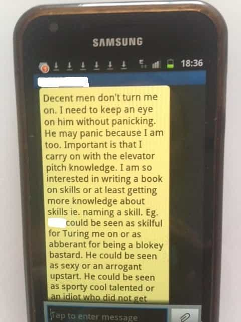
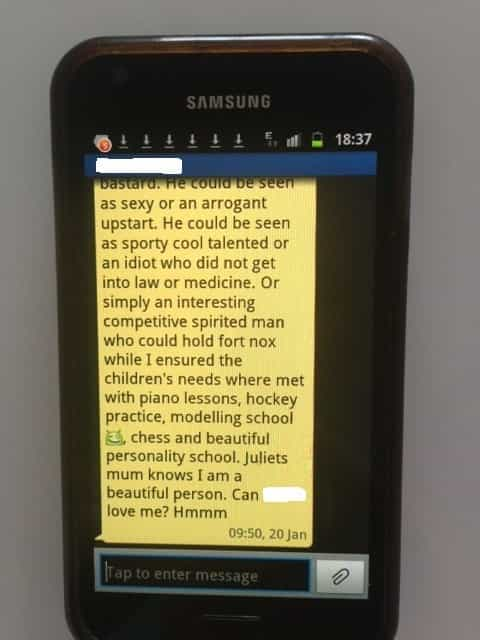

< < < Back
5 Things You Must Do If You Have A Female Stalker – Return Of Kings
I’ve recently been through a harrowing ordeal with a female stalker that lasted nearly a year, so I feel well-credentialed to write this article. Thankfully, the deranged woman in question is now detained in a private mental institution, via the psych ward of a local hospital.
If you currently have a female stalker, be prepared to dig in for the long haul. They can be harder to shake than a broken hand, and because your adversary is a woman in what has become an extremely misandrous society, chances are authorities won’t be at all interested in helping you.
So is there really such thing?
Most people scoff at the notion of a female stalker. “Oh, you poor guy! Some woman wants to have sex with you!” they will say with sarcasm. But let me tell you, these nut jobs can take over your life, and make you feel very unsafe. Your guard will constantly be up, because whilst it is easy for a man to physically defend himself against a woman, this is only true if he sees her coming. At best they are merely an annoyance, but no matter what they absolutely will not take no for an answer.
You should take this warning seriously. It is well documented that a very high percentage of western women have a mental illness, and that number grows every year. Therefore, we can reasonably conclude that the number of female stalkers will also continue to rise, as will the likelihood you may encounter one in the future.
My stalker was a former child actor, who had apparently gone off the rails and developed a drug addiction. Despite not appearing to work she was able to maintain a wealthy lifestyle, thanks to her rich parents who bought her a luxury apartment in my building. She approached me one day and initially I considered her weird, but definitely harmless.
However, she soon began following me everywhere – to and from work on the bus, around town on my lunch break, to the gym, to watch me play tennis, you name it – and she definitely wasn’t subtle. A few times I came home late at night and saw her out the front of the building waiting in her car. She would tell me she wanted me to be the father of her kids, leave letters on my car that have to be seen to be believed (see Crazy letter 1 and Crazy letter 2), and after somehow finding my number (I’m guessing online), bombarded me with text messages.
Thankfully, my ordeal now appears to be over. To help other men who are being harassed by female stalkers, I have compiled some tips:
1. Know your enemy
Most female stalkers are intelligent and well-educated, but have serious mental disorders such as bipolar syndrome.
You need to familiarise yourself with the characteristics of female stalkers so you have an idea of what you might be up against. With a lack of support provided from the authorities, I started researching female stalkers online. It was amazing how many boxes my stalker ticked – she really fit the profile! According to this study:
Female stalkers were predominantly single, heterosexual, educated individuals in their mid-30s who had pursued their victims for more than a year. Major mental disorder and personality disorder were suggested, especially borderline personality disorder. They usually threatened violence, and if they did threaten, were more likely to be violent. Frequency of interpersonal violence was 25 percent, but there was limited use of weapons, and injuries were minor. Stalking victims were most likely to be slightly older male acquaintances; but if the victim was a prior sexual intimate of the female stalker, her risk of being violent toward him exceeded 50 percent. Unlike male stalkers who often pursue their victims to restore intimacy, these female stalkers often pursued their victims to establish intimacy. Common emotions and motivations included anger, obsessional thoughts, rage at abandonment, loneliness, dependency, jealousy, and perceived betrayal.
Fortunately, I was able to avoid a physical attack by my female stalker, possibly because I was never foolish enough to be sexually intimate with her. Thank God for that, because when the police finally detained her, it emerged that she had a history of assault!
It is definitely true that female stalkers tend to be intelligent and well-educated (which helps them successfully get their creep on). My stalker had a psychology degree, and was 36 years old. She also displayed all the signs of bi-polar syndrome, such as obsession with goals, substance abuse, irritability, restlessness, high sex drive, and racing thoughts.
2. Be persistent
Single White Female with a black bag? Check…
Cases involving female stalkers are unlikely to be resolved quickly. Your patience, resilience, and sanity are going to be tested. I went to the police numerous times over the course of many months and they never even bothered to contact my stalker, let alone reprimand her.
Mental health authorities gave me attitude, as though I was either vexatious or just making the whole thing up. Whatever happens, don’t be discouraged. You need to persist, because there is a high probability your female stalker will not just go away. Cast as many nets as possible, and follow up with all of them regularly. Leave no stone unturned.
You will need to contact the police, mental health authorities, security at your workplace, your building manager (if you live in an apartment or unit complex) and if possible, the stalker’s relevant professional body. My stalker was a psychologist, but when I complained to the Australian Health Practitioner Regulation Agency, they launched an investigation and swiftly suspended her registration.
3. Keep your cool
We are constantly told by feminists that women are equal to men and free to do whatever they want in their lives. This sounds reasonable, but unfortunately in the Western world only men are regularly held accountable for their actions. Male stalkers are far more likely to be prosecuted than female stalkers, even though there are comparable rates of violence and psychopathy with male and female stalkers.
It is incredibly frustrating to have your legitimate complaints not taken seriously by the authorities. I felt like I was butting my head against a brick wall. You will receive little sympathy, and you will be crucified if you try and handle the situation by yourself. You can’t yell at your stalker in public, and definitely don’t touch her at all, because you risk being charged with an offence.
If that happens, anything that occurred up to that point will likely be deemed irrelevant, simply because you have a penis and she has a vagina. The police even admitted that if they didn’t know details about an altercation, from the beginning of an investigation they would instinctively side with the woman.
4. Document everything
My stalker would follow me into work every day, always taking the closest available seat on the bus. The police wanted evidence, so I started taking photos like this
You should compile all her letters and texts, and record any strange behaviour she exhibits. The more evidence you have, the better. For example, after a friend’s suggestion I started taking photos of her on my phone when she was obviously stalking me.
You should document all her weird behaviour by writing it down, dating it, and wherever possible, providing details of any witnesses. Without any evidence, the police and other authorities will completely dismiss you. If you have evidence, they will at least listen to your story – well, hopefully!
Even if you are fobbed off, keep compiling records! In my case, it was only after a mystery person reported my stalker’s weird and obsessive behaviour that police and mental health authorities began to give me the time of day. Because I had been diligent, I had plenty of evidence to give them.
Finally, her behaviour was taken seriously, and this led to a “raid” of her apartment by police and mental health authorities where, after threatening suicide, she was restrained, drugged, wheeled on a trolley into the back of a waiting ambulance and taken to a secure mental health ward.
If she is really crazy, she will slip up eventually and other women will complain. Sadly, this is your best shot for some sort of resolution. Understand that whilst the notion of a damsel in distress is timeless, nobody gives a shit if you are being hassled, and especially by a woman. However, if you have a woman on your side things can change, and fast. Suddenly, your evidence will no longer be ignored.
5. Avoid engaging with them

It your female stalker bombards you with freaky text messages like this, make sure you hold on to them as evidence and, if possible, get your cell provider to block them.
You may need to write a firm note telling her to leave you alone or you will go to the police (they advised me to do this as “evidence” I had communicated my unhappiness about being stalked to her). In my case, merely telling them I had written a note was not enough, so I had to write another one and photocopy it for official records.
But apart from that, do not even look at them, let alone speak to them. Mental Health authorities advised me not to engage with her in any way as she would be encouraged by any interaction, no matter how negative. This was definitely true in my case, and admittedly something I was slow to learn from. No matter how many times I told her she was a freak and to leave me the fuck alone, she would always come back for more.
Finally, good luck. You are going to need it!
Read More: The 3 Tools Of The Predatory Female


{kind=link}
{kind=link}
{kind=link}
{kind=link}